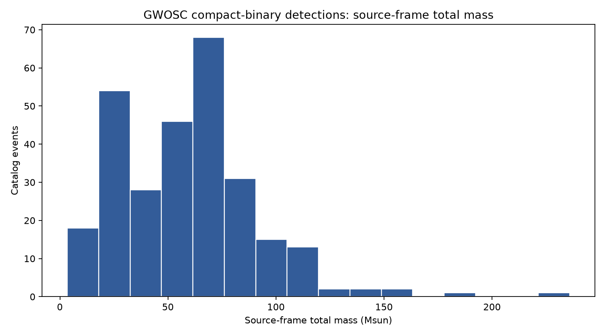
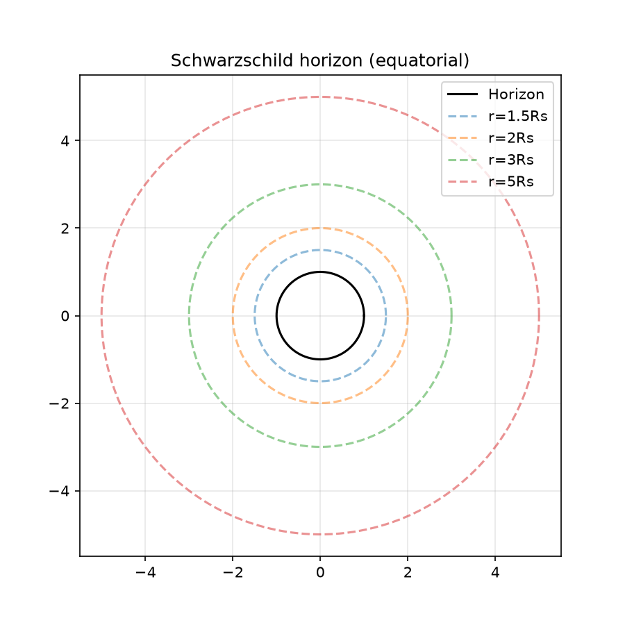
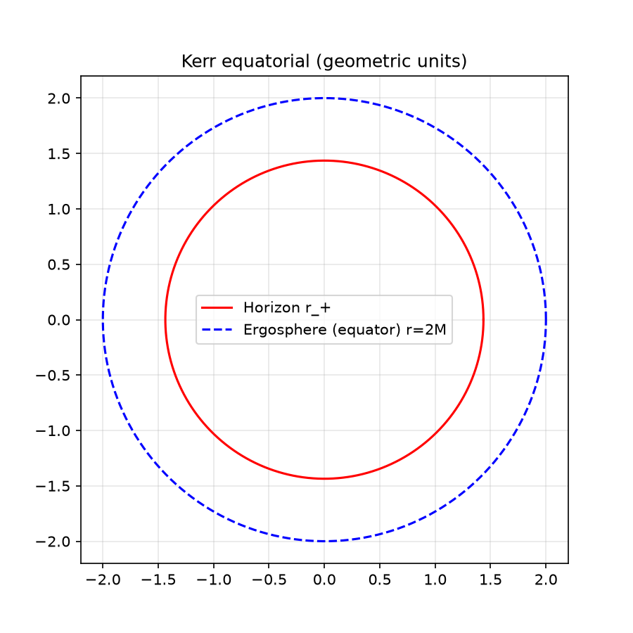
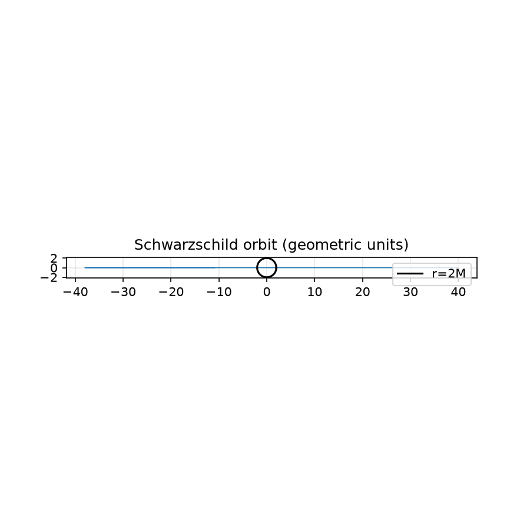
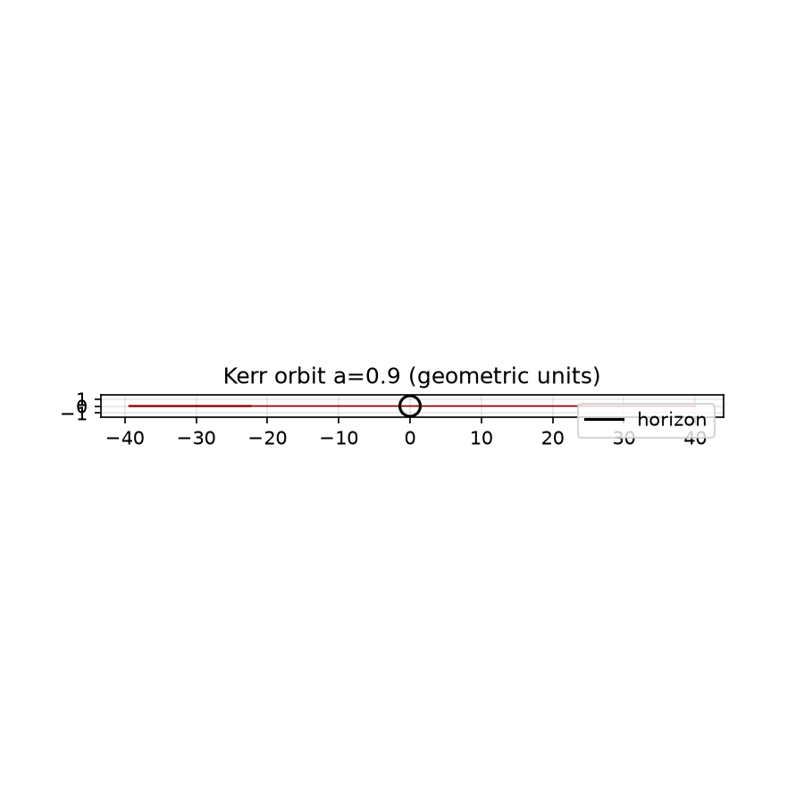
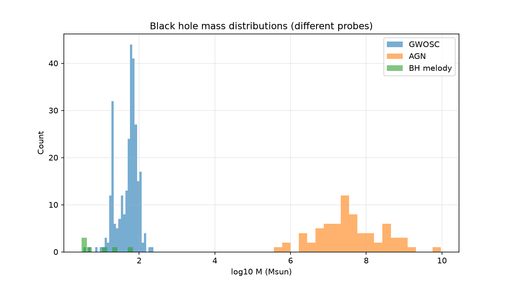
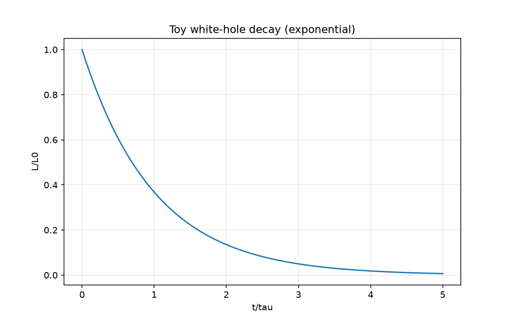

Black holes, wormholes, white holes – research notebooks.
1. Fundamentals 2. Extended models 3. Data exploration 4. White hole instability 5. Equation derivations 6. Visual models 7. Geodesics 8. Christoffel symbols 9. White hole extended 10. Complete theory 11. Data synthesis 12. Advanced models 13. White hole deep dive 3D wormhole (interactive)





